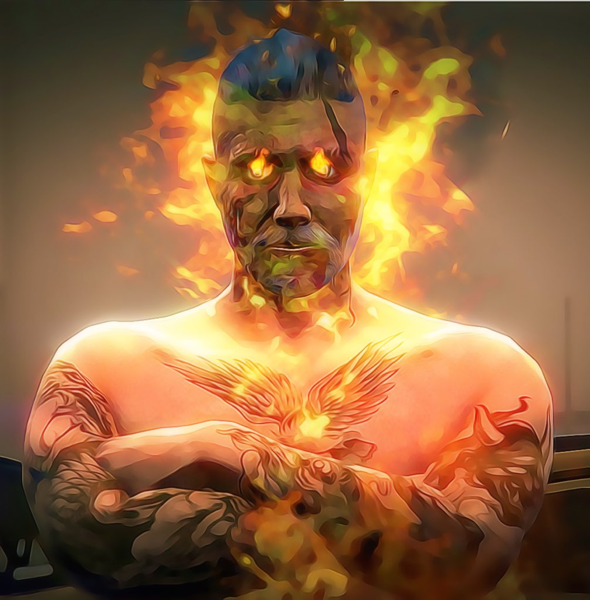
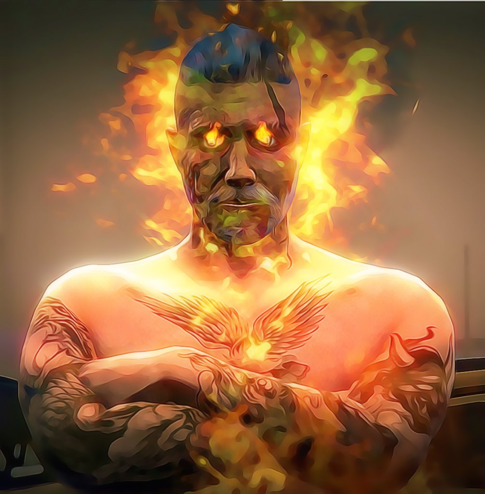

Ken FLASH
Avant
Ken Flash, 18 ans, homme.
Ken croyait porter le nom de Wayathe jusqu’à ce que sa mère, en larmes après avoir retrouvé la mémoire, lui révèle qu’elle a trahi l’amour de John Flash. Il découvre alors que John, qu’il pensait être l’assassin de son père, est en réalité son véritable père. Abandonnant son faux nom, Ken adopte fièrement le patronyme Flash.
À 18 ans, il part en Italie avec son ami d’enfance Mario. Lors d’un voyage, il rencontre Giulia Vitale, une femme mystérieuse qu’il prend en stop sous la pluie. Une connexion immédiate naît entre eux, et Ken tombe amoureux. Cependant, Giulia, tourmentée par ses propres secrets, pense : « Ce garçon est trop impulsif, trop pur… Je ne peux pas l’entraîner dans mon monde. » Malgré leur nuit passée ensemble, elle disparaît.
À 19 ans, Ken retourne à Los Santos, plus déterminé que jamais. Il se distingue dans des combats de rue, attirant l’attention d’un capitaine de la LSPD qui l’intègre dans une nouvelle brigade. Son objectif : retrouver Giulia, disparue depuis un an. Après des succès dans la police, il la retrouve enfin. Giulia a abandonné sa vie de mafieuse italienne, et ils entament une relation stable sans jamais se marier. Ken rencontre alors son grand-père, David Flash, et sa demi-sœur, Raven Flash, découvrant l’histoire complexe de sa famille. Il accepte sa destinée : reprendre le Gang Double pour en faire la 2e génération.
À 23 ans, de retour à Los Santos, Ken avoue à Giulia ses activités criminelles. Sous le nom de Drago, il est devenu braqueur, tueur et dealer, figurant parmi les criminels les plus recherchés. Dégoûtée par sa double vie et sa liaison avec une autre femme, Giulia le quitte et retourne en Italie.
À 24 ans, Ken est envoyé de force dans un camp militaire. Il y excelle, devenant caporal, mais replonge dans la violence. Recherché, il apprend que Luna, une femme avec qui il a eu une aventure, est enceinte. Il disparaît à nouveau. À 25 ans, il revient à Los Santos et fonde le Gang Double 2.0. Lorsqu’il retrouve Luna et découvre qu’elle a fait une fausse couche, il la tue.
Plus tard, Ken rencontre Laila, une psychologue italienne. Leur relation, d’abord physique, évolue vers un mariage. Laila tombe enceinte de jumeaux. Ken retrouve Giulia, qui lui révèle qu’elle a eu un enfant de lui, élevé en secret par David Flash. Ken lui confesse tout : son mariage, les jumeaux à venir, et son statut de criminel recherché sous le nom de Drago. Sa liberté touche à sa fin. Capturé lors d’un assaut à Los Santos, il est emprisonné.
Après
Ken Flash, 44 ans, homme.
En prison, Ken est sauvé par son père, John Flash, et son grand-père, David Flash, qui fusionnent leurs consciences avec la sienne, formant une entité unique dans son corps. Sa voix devient un mélange de trois timbres distincts, reflétant leurs trois esprits.
À ce moment, le Gang Double est au bord de l’effondrement, ses membres arrêtés les uns après les autres. Ken libère sa femme Laila, Choux Fleur, et Jason DaSilva. Avec Laila, Jason (bras droit), Titeuff (bras gauche), Waki Anderlock, Juarez McKalister, et Choux Fleur, il reforme le gang. Mais, décidé à changer, Ken dissout le Gang Double et confie ses clés à Jason, espérant qu’il les transmettra un jour à Aaron, son fils avec Laila. Il révèle à Laila que leur fils aîné, David Jr., né de son union avec Giulia, est consumé par le mal. Pour éviter une catastrophe, Ken sépare leurs jumeaux nourrissons, Aaron et Kylie. Laila élèvera Kylie, tandis que Ken formera Aaron pour qu’il puisse un jour affronter David Jr. Après un adieu déchirant, ils se séparent.
À 44 ans, Ken revient dans un Los Santos post-apocalyptique. Il retrouve Giulia et les membres du Gang Double 3.0, qu’il entraîne pour un ultime combat contre David Jr. Le gang, jadis criminel, devient une équipe de héros défendant la nation. Ken prend également sous son aile Nina, une jeune femme du même âge que son fils, qu’il forme à la méditation. Grâce à cette pratique et à la force de l’amour, Nina ramène Aaron à la vie. Pendant ce temps, Ken affronte seul David Jr. dans une bataille acharnée pour gagner du temps. Il se sacrifie, mourant pour offrir une dernière chance à la paix.
Animal spirituel
Le dragon, animal spirituel de Ken Flash, représente sa puissance indomptable et sa détermination sans faille à ne jamais renoncer.
Épisodes de Ken FLASH
Saison 1
- Épisode 1: Qui est Ken Flash ?! GTAV RP Adastra 450 Slots ! FR
- Épisode 2: Je deviens videur ! GTAV RP Adastra 450 Slots ! FR
- Épisode 3: Je vais me faire passer pour un homme riche ! GTAV RP - 450 Personnes ! FR
- Épisode 4: Qu'est-ce que Giulia me cache ? Ken est amoureux ! FR
- Épisode 5: Qu'est-ce que Giulia me cache ? Ken est amoureux ! FR
- Épisode 6: Giulia me trouve trop jeune ! : Je vais lui prouver que je suis un homme GTAV RP ! FR #RoadTo700K
- Épisode 7: [Part 1] Un gang me propose du boulot sale ! Giulia ne doit pas le savoir ! GTAV RP ! FR #RoadTo700K
- Épisode 8: [Part 2] Un gang me propose du boulot sale ! Giulia ne doit pas le savoir ! GTAV RP ! FR #RoadTo700K
- Épisode 9: J'ai posé un lapin à Giulia :S ! GTAV RP Adastra #7 ! FR #RoadTo700K
- Épisode 10: Ken va-t-il avouer ses sentiments à Giulia ?! GTAV RP Adastra #8 ! FR #RoadTo700K
- Épisode 11: Un amour impossible ?! GTAV RP #9 ! FR #RoadTo700K
- Épisode 12: Giulia et Ken, un vrai amour ! GTAV RP #10 ! FR #RoadTo700K
- Épisode 13: Giulia, où es-tu ?! Épisode cinématique GTAV RP Saison 2 #1 ! FR #RoadTo700K
- Épisode 14: Ken va se venger ! GTAV RP Saison 2 #2 ! FR #RoadTo700K
- Épisode 15: Qui est cette femme mystérieuse ?! GTAV RP Saison 2 #3 ! FR #RoadTo700K
- Épisode 16: [Part 1] Giulia encore en vie ?! Je vais à sa recherche ! GTAV RP Saison 2 #4 ! FR #RoadTo700K
- Épisode 17: [Part 2] Giulia encore en vie ?! Je vais à sa recherche ! GTAV RP Saison 2 #4 ! FR #RoadTo700K
- Épisode 18: Giulia m'a oublié :'( ! GTAV RP #5 ! FR #RoadTo700K
- Épisode 19: David Flash vs Ken Flash ! Le face-à-face ! GTAV RP #6
- Épisode 20: Giulia va-t-elle se souvenir de Ken ? GTAV RP #7 FR
- Épisode 21: Ken prend un peu de temps pour réfléchir GTAV RP #8 FR
- Épisode 22: Ken Flash is back ! GTAV RP !
- Épisode 23: Giulia et Ken au septième ciel ! GTA V RP #2
- Épisode 24: On commence notre business ! GTA V RP #3
- Épisode 25: On va faire du sale ce soir ! Wesh ! GTAV RP !
- Épisode 26: Giulia et Ken, un amour pas comme les autres ! GTA V RP #5
- Épisode 27: Ken est perdu ! GTA V RP #6
- Épisode 28: [Redif] Ken va braquer des banques ce soir ! GTAV RP
- Épisode 29: Ken Flash vs Agent X ! GTAV RP !
- Épisode 30: Ken Flash sur les traces de son père ! GTAV RP
- Épisode 31: Ken Flash, l’héritage de David Flash ! GTAV RP
- Épisode 32: Ken a fait une connerie ! GTAV RP
- Épisode 33: Ken vs le braquage du siècle ! GTAV RP !
- Épisode 34: Ken Flash reprend du service ! Infiltration ! GTAV RP
- Épisode 35: Ken Flash recherché par l’armée ! GTAV RP
- Épisode 36: Ken Flash le mythomane (c’est une maladie donc) ! GTAV RP
- Épisode 37: Ken Flash le mythomane (c’est une maladie donc) ! GTAV RP
- Épisode 38: Ken Flash le mythomane (c’est une maladie donc) ! GTAV RP
- Épisode 39: Ken Flash promu dans l’armée GTAV RP
- Épisode 40: Aby ma friendzone ! GTAV RP
- Épisode 41: Aby ma friendzone ! GTAV RP
- Épisode 42: La maladie de Ken Flash ! GTA V RP ! by iProMx #1
- Épisode 43: L’état de Ken Flash s’empire ! GTA V RP ! by iProMx #2
- Épisode 44: Ken Flash recherché par toute la ville ! GTA V RP ! by iProMx #3
- Épisode 45: Ken Flash assiste à sa propre enterrement ! GTA V RP ! by iProMx #4
- Épisode 46: Ken Flash bientôt papa ?! GTA V RP ! by iProMx #5
- Épisode 47: Nouvelle identité pour Ken Flash ! GTA V RP ! by iProMx #6
- Épisode 48: [Part 1] Ken Flash vs Paco ! Retrouvailles ! GTA V RP ! by iProMx #7
- Épisode 49: [Part 2] Ken Flash vs Paco ! Retrouvailles ! GTA V RP ! by iProMx #8
- Épisode 50: Le retour de Ken Flash ! Nouvelle ville ! Nouvelle vie ! GTA V RP ! by iProMx #9
- Épisode 51: Ken Flash achète l’hôpital ! Retrouvailles avec Alessa ! GTA V RP ! by iProMx #10
- Épisode 52: Ken Flash et la drogue de son père ! GTA V RP ! by iProMx #11
- Épisode 53: Ken Flash, la fortune ! GTAV RP #1 Saison Finale !
- Épisode 54: Ken achète des armes ! GTA V RP ! by iProMx #13
- Épisode 55: Ken Flash gère la drogue Moukate ! GTA V RP ! by iProMx #12
- Épisode 56: Ken, Titeuf et Juarez font une soirée dans leur villa ! GTA V RP ! by iProMx #14
- Épisode 57: Ken Flash sur les pas de John Flash ! GTA V RP ! by iProMx #15
- Épisode 58: Ken Flash bombarde la ville ! GTA V RP ! by iProMx #16
- Épisode 59: Ken Flash, un amour impossible ?! GTA V RP ! by iProMx #17
- Épisode 60: Ken Flash vs Gang ! GTA V RP ! by iProMx #18
- Épisode 61: L’empire de Ken Flash ! GTA V RP ! by iProMx #19
- Épisode 62: Ken et Giulia, le face-à-face ! GTA V RP ! by iProMx #22
- Épisode 63: Braquage du siècle ! GTA V RP ! by iProMx #21
- Épisode 64: Ken et Giulia, le face-à-face ! GTA V RP ! by iProMx #22
- Épisode 65: Ken Flash, le dragon ! GTA V RP ! by iProMx #23
- Épisode 66: La reprise du Gang Double ! GTA V RP ! by iProMx #24
- Épisode 67: La trahison d’Esteban ! GTA V RP ! by iProMx #25
- Épisode 68: Le message de David Flash ! GTA V RP ! by iProMx #26
- Épisode 69: Leila enceinte ?! Ken abandonne Giulia ?! GTA V RP ! by iProMx #27
- Épisode 70: Leila enceinte ?! Ken abandonne Giulia ?! GTA V RP ! by iProMx #27
- Épisode 71: Ken Flash encore papa ?! GTA V RP ! by iProMx #29
- Épisode 72: Ken Flash enfin papa ?! La relève ! GTA V RP ! by iProMx #30
- Épisode 73: L’annonce de Giulia ! GTA V RP ! by iProMx #31
- Épisode 74: La mort de Dereck McCalister ! GTA V RP ! by iProMx #32
- Épisode 75: Ken Flash recherché par toute la ville ! 1 million de prime ! GTA V RP ! by iProMx #33
- Épisode 76: Les familles à travers de Double 2.0 ! GTA V RP ! by iProMx #34
- Épisode 77: La prime s’élève à 5 millions ! GTA V RP ! by iProMx #35
- Épisode 78: Leila accouche ?! GTA V RP ! by iProMx #36
- Épisode 79: La mort de Ken Flash (ou pas) ?! GTA V RP ! by iProMx #37
- Épisode 80: David, John et Ken, le face-à-face ! GTA V RP ! by iProMx #38
- Épisode 81: Ken Flash achète l’hôpital ! Retrouvailles avec Alessa ! GTA V RP ! by iProMx #10
Saison 2
- Épisode 1: Le retour de Ken Flash ! GTA V RP ! by iProMx #1 S2
- Épisode 2: Les nouveaux pouvoirs du dragon ! GTA V RP ! by iProMx #2 S2
- Épisode 3: Ken Flash vs le juge ! GTA V RP ! by iProMx #3 S2
- Épisode 4: Ken Flash, la dernière préparation ! GTA V RP ! by iProMx #4 S2
- Épisode 5: Ken Flash contrôle la LSPD + braquage ! 120 000 000 prime ! GTA V RP ! by iProMx #5 S2
- Épisode 6: Ken Flash vs David Jr ! 300 000 000 prime ! GTA V RP ! by iProMx #6 S2
- Épisode 7: Ken Flash, un méchant héros ?! GTA V RP ! by iProMx #7 S2
- Épisode 8: La fin de Ken Flash ?! GTA V RP ! by iProMx #8 S2
- Épisode 9: Ken Flash, dernier jour avant le grand départ ?! GTA V RP ! by iProMx #9 S2
- Épisode 10: Ken Flash, les adieux ! GTA V RP ! by iProMx #10 S2
- Épisode 11: La bataille finale des Flash ! GTA V RP ! by iProMx #11 S2